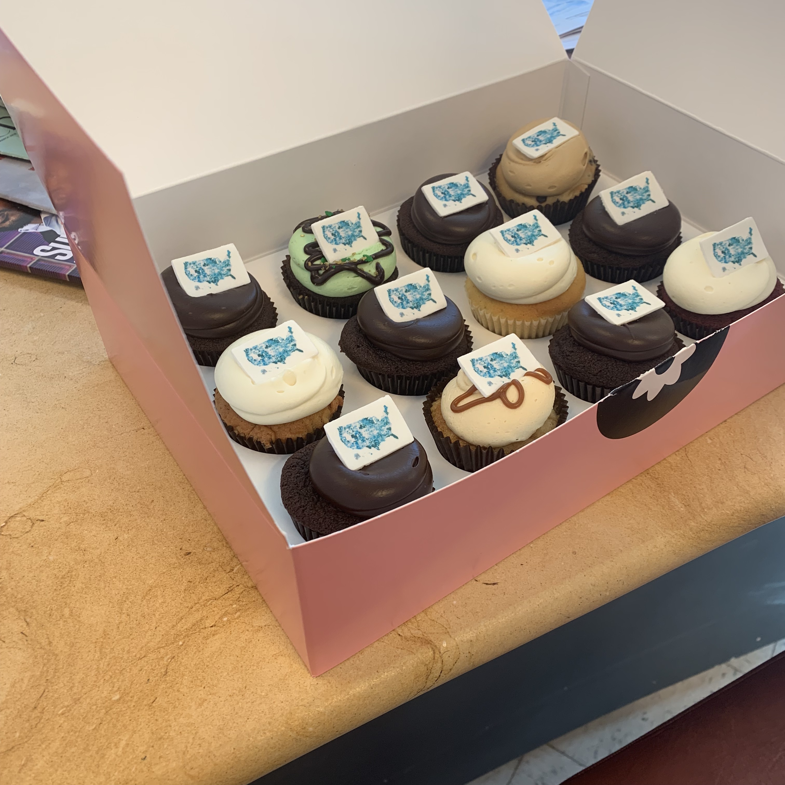

|
Interactive Maps 
I collaborated with front-end developer Rekha Tenjarla to create three interactive map visualizations that allow readers to look up how politically partisan their home county is. Overview For an Atlantic piece on political intolerance, we were given data for how politically partisan each county in the U.S. ranked. In some places, Americans are quicker to dislike or stereotype those who hold different political views, while other places are more accepting of others despite disagreements. Using this data, we created interactive d3.js maps to accompany the article. The final maps looked like this:  Searching a county UI Exploration Legend: numerical scores didn't convey much information to the reader, so simpler language and a horizontal legend (optimized for mobile/desktop) were used.  Legend layouts Color schemes for the three maps UX Considerations
Final Maps Explore the maps here! Look up your home county to see how politically prejudiced it's ranked and read about the data findings in the article. 
But wait ...there were map cupcakes (mapcakes!) to celebrate the launch, courtesy of our lovely product manager, Anika.

|
I’m a product designer who has worked on customer-facing web apps, internal tools, and media products. I'm excited about tech & design for social and sustainable impact.
Currently a senior product designer at Arcadia üå±